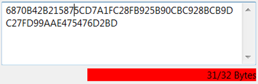
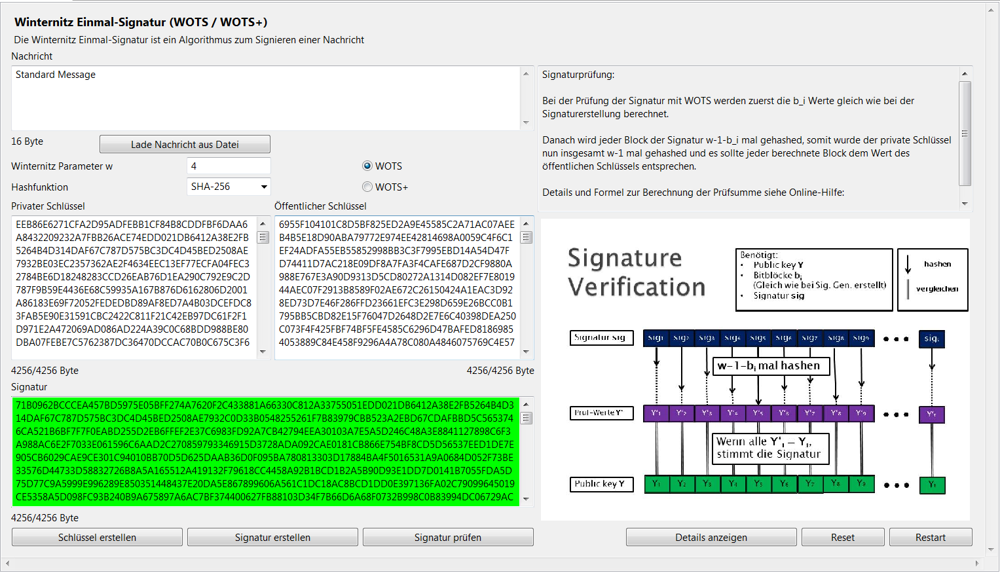
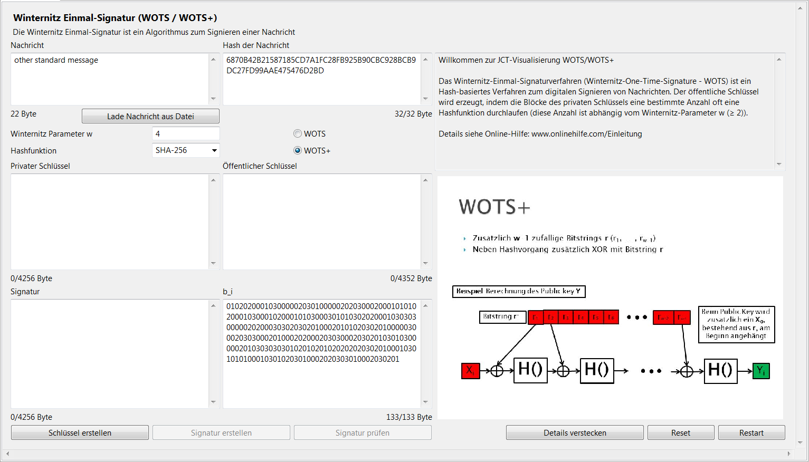

1) Generelle Funktionsweise des Plugins 1.1) Eingabefelder 1.2) Parameter 1.3) Buttons 2) Winternitz OTS-Verfahren 2.1) Schlüsselerzeugung 2.1.1) Verwendete Parameter 2.1.2) Privater Schlüssel (X) 2.1.3) Öffentlicher Schlüssel (Y) 2.2) Signaturerzeugung 2.2.1) Erzeugung des Vektors B 2.2.2) Signatur 2.3) Signaturprüfung 3) WOTS+ 3.1) Bitstring R 3.2) Beispiel 4) Sicherheit 5) Weiterführende Verweise
Diese Visualisierung demonstriert das Winternitz Einmal-Signaturverfahren (Winternitz One-Time Signature) (WOTS).
WOTS ist ein Verfahren zum digitalen Signieren von Nachrichten. Bei einem Einmal-Signaturverfahren wird ein Schlüsselpaar nur zum einmaligen Signieren einer einzigen Nachricht verwendet.
JCT enthält in mehreren Plugins eine Folge von Visualisierungen der modernen PQC-Signaturen (wie XMSS und SPHINCS) – eine gute und aktuelle Übersicht zu solchen Verfahren findet sich in der Wikipedia [1,2]. WOTS in der Variante WOTS+ ist ein Baustein von XMSS und SPHINCS.
Alle "Eingabefelder" sind editierbar. Nur das Feld Nachricht ist vom Nutzer mit Text zu füllen; alle anderen Felder werden durch Drücken der Buttons Schlüssel erstellen oder Signatur erstellen berechnet. Auch die berechneten Felder bleiben editierbar, um die Korrektheit der Signaturprüfung zeigen zu können.

Generelles zur Vermeidung von Falsch-Eingaben: Unterhalb jedes editierbaren Feldes befindet sich eine Anzeige mit dem Ist- und Soll-Wert der Länge des Feldinhalts. Beim Editieren der Felder verändert sich der Ist-Wert dynamisch und färbt sich rot, wenn der Wert vom Soll-Wert der Länge abweicht. Im Nachrichtenfeld sind beliebige Zeichen verwendbar, in den restlichen Feldern jedoch nur gültige Hexadezimalziffern (0-9 und A-F). Wenn ungültige Zeichen eingegeben werden, färbt sich das jeweilige Feld rot. Solange ungültige Eingaben oder falsche Längen eingegeben sind, ist die Bearbeitung der restlichen Felder deaktiviert.

Zwischen den Buttons "Schlüssel erstellen", "Signatur erstellen" und "Signatur prüfen" besteht eine Abhängigkeit bzgl. ihrer Aktivierung: Der Button Signatur erstellen wird erst aktiviert, wenn Schlüssel erstellt worden sind; und der Button Signatur prüfen wird erst aktiviert, wenn eine Signatur erstellt worden ist.
Der private Schlüssel X besteht aus t Blöcken. Jeder Block besteht aus n pseudozufällig erzeugten Bytes.
Der öffentliche Schlüssel Y besteht ebenfalls aus t Blöcken. Y leitet sich vom privaten Schlüssel X ab, indem die einzelnen Blöcke des privaten Schlüssels jeweils w-1 mal die Hashfunktion durchlaufen.

B setzt sich aus t Blöcken zusammen. Zur Berechnung wird zum Nachrichtenhash m (mit m ist hier immer der Hashwert der eigentlichen Nachricht gemeint) eine Checksum C berechnet. Dazu wird vorher m zur Basis w dargestellt.
C = Checksum = Summe aus w-1-M_i mit 1 <= i <= l_1.
Nun werden beide Werte m und C jeweils zur Basis w dargestellt; das Ergebnis bilden insgesamt t Werte (m zur Basis w resultiert in t_1 Werte, C resultiert in t_2 Werte). Um genau auf die Werte t_1 und t_2 zu kommen, wird eine ausreichende Anzahl an "0" vorangestellt.
Zur weiteren Berechnung werden diese t Blöcke des Vektors B als natürliche Zahl (Integer) interpretiert.
Beispiel: Block b_i = 0111 = 7
Zur Erstellung der Signatur (welche ebenfalls aus t Blöcken besteht) durchläuft jeder Block X_i des privaten Schlüssels genau b_i mal die verwendete Hashfunktion. Das Ergebnis ist die Signatur sig.

Um die Signatur zu überprüfen, wird der Vektor B berechnet wie in Punkt 2.2.1. Nun durchläuft jeder Block sig_i der Signatur genau w - 1 - b_i mal die verwendete Hashfunktion. Diese Prüfsignatur besteht also aus den Blöcken des privaten Schlüssels, die jeweils w-1 mal (b_i + w - 1 - b_i) die Hashfunktion durchlaufen haben. Da das die gleiche Berechnung wie die des öffentlichen Schlüssels ist, werden nun die Blöcke mit denen des öffentlichen Schlüssels verglichen. Wenn keine Abweichungen vorhanden sind, ist die Signatur korrekt.

Bei WOTS+ unterscheidet sich die Verarbeitung der einzelnen Blöcke geringfügig gegenüber WOTS. Hier wird zuerst ein zusätzlicher Bitstring R erzeugt, der aus w-1, n-bit großen Blöcken besteht. Bei der Berechnung des x-ten Hashes wird der Wert vorher mit dem x-ten Block von R geXORt.
R besteht aus w-1 Blöcken, die jeweils aus n pseudozufälligen Bits bestehen. Diese Blöcke werden beim öffentlichen Schlüssel Y vorne angehängt.
Berechnung des ersten Blocks des öffentlichen Schlüssels (Y_1): Bevor der Block X_1 von der Hashfunktion verarbeitet wird, wird auf ihn ein XOR mit dem ersten Block des Vektors R, also R_1, angewandt. Vor dem zweiten Hashvorgang wird ein XOR mit R_2 durchgeführt. Da der Block w-1 mal die Hashfunktion durchläuft, besteht R auch aus w-1 Blöcken. Berechnung des ersten Blocks der Prüfsignatur: Angenommen b_1 = 6 und w = 10, dann wird sig_1 in w - 1 - b_i = 3 Runden bearbeitet. Beim ersten Block wird nicht R_1 verwendet, sondern R_(b_i + 1), um auf den korrekten Wert zu kommen, der sich mit Y_1 (erster Block des öffentlichen Schlüssels) abgleichen lässt.

Für beide Verfahren gilt, dass ein Schlüsselpaar nur zum einmaligen Signieren (Einmal-Signatur) verwendet werden darf, da ein Angreifer ansonsten Teile des privaten Schlüssels lernen kann. Um dieses Problem zu lösen, gibt es Methoden, bei denen viele öffentliche Einmal-Signatur-Schlüssel mit Hilfe eines binären Hashbaumes durch einen einzigen Hashwert authentifiziert werden (siehe Merkle-Bäume). Die Sicherheit hängt stark von der verwendeten Hashfunktion ab. Bei WOTS muss diese kollisionsresistent sein, bei WOTS+ 2nd-preimage-resistent. D.h. WOTS+ stellt geringere Anforderungen an die Hashfunktion, ist jedoch auch komplexer in der Berechnung.
Weitere Informationen zum Thema Post-Quanten-Kryptografie (PQC) und Winternitz Einmal-Signaturverfahren (WOTS) finden Sie beispielsweise unter: